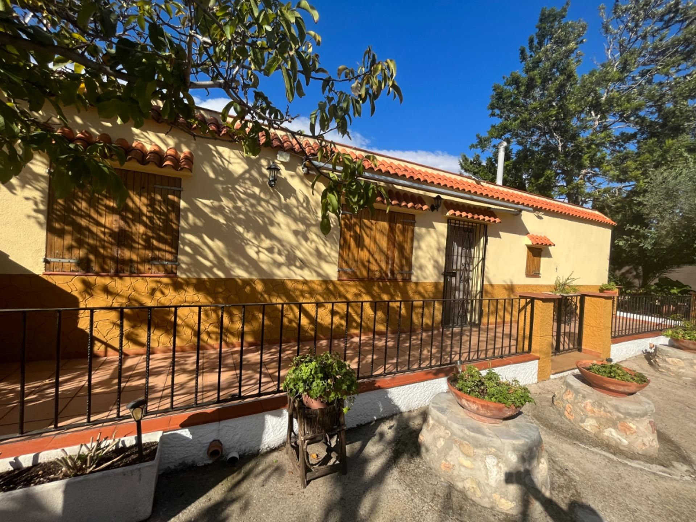
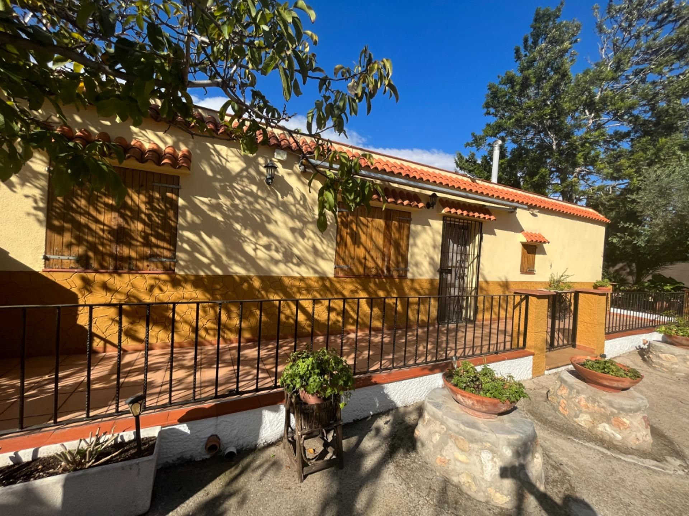
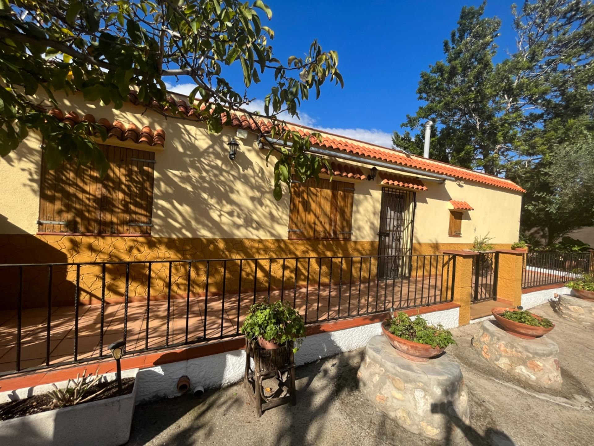
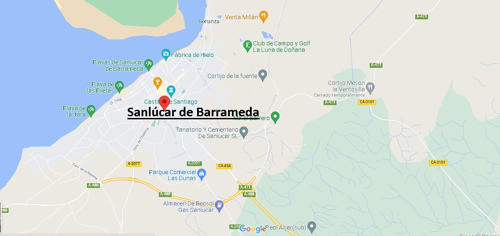

Imagenes de la casa
 


Situada en un entorno natural privilegiado, Casa Rural El Descanso ofrece el refugio perfecto para escapar de la rutina y conectar con la naturaleza. Nuestra casa combina el encanto rústico con todas las comodidades modernas que necesita para disfrutar de una estancia inolvidable.

Nuestra casa rulal se ubica a las afueras de la ciudad, en la zona, La Jara, siendo una de las zonas mas tranquilas de Sanlucar de Barrameda, estando a tan solo 5 minutos a pie de la preciosa playa.
